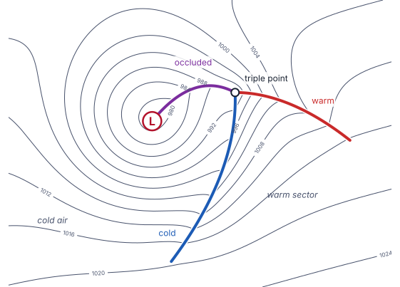

Frontal analysis quick guide
How to place cold, warm and occluded fronts on an ocean surface analysis, in the order a desk analyst works. Northern Hemisphere wind directions throughout.
The routine
- Start at the low and find the troughs. Fronts lie in pressure troughs. Look for isobars that kink into a V; the front runs through the point of each V.
- Find the temperature contrast. On 850 hPa theta-e or 1000-500 hPa thickness, find where the lines pack together. Put the front on the warm edge of that packing, not in the middle of it.
- Confirm with the wind shift. Across a cold front the 10 m wind veers (SW to W or NW). Across a warm front it veers from SE ahead to SW behind. The shift shows as a line of convergence.
- Check the cloud. A cold front is a long, narrow cloud band; a warm front a broad shield on its poleward side; an occlusion a band spiralling into the low, with the dry slot wrapping in behind it.
- Check the tendency. Pressure falls ahead of a warm front and rises behind a cold front. The strongest falls usually sit near the triple point.
- Stop where the contrast ends. End a front where the temperature contrast and wind shift fade; don't carry it on along a trough that has no thermal contrast.

What each front looks like
| Cold | Warm | Occluded | |
|---|---|---|---|
| Where | Trails equatorward from the triple point (or low), usually the longest front. | Leads east or southeast from the triple point, ahead of the warm sector. | From the low to the triple point, often curling around the low. |
| Theta-e / thickness | Warm edge of the packing; colder air behind it. | Warm (equatorward) edge of the packing; the gradient lies poleward, ahead of it. Often weaker than at the cold front. | Along a ridge of high theta-e (the warm air wrapped into the low), with lower values either side. |
| 10 m wind | Veers SW to W/NW; often a sharp shift and speed change. | SE or E ahead, S or SW behind; the shift is broader and gentler than at a cold front. | Cyclonic turn around the low; convergence line along it. |
| Pressure | Sharp trough; rises behind. | Weaker trough; falls ahead. | Trough wrapping into the low. |
| Imagery | Narrow cloud band, clear or cellular cold air behind. | Broad layered shield on the poleward side. | Cloud band spiralling in, dry slot behind. |
Stationary fronts and the low are given in the drill. Troughs are not scored.
Occlusions and the triple point
- The triple point is where the cold, warm and occluded fronts meet. It usually sits near the tip of the dry slot and near the strongest pressure falls.
- Strong ocean lows often wrap warm air back around the centre. Follow the theta-e ridge into the low; the occluded front can curve well around the west side of the low.
- New lows often form at the triple point. If the drill gives you two lows, the fronts usually join at the newer one.
Common mistakes
- Drawing the front in the middle of the temperature gradient instead of on its warm edge.
- Following a thickness line around the map. Fronts cut across thickness lines where the contrast is strongest; they don't follow one contour.
- Missing the warm front of a mature low because its thermal contrast is weak. Look for the trough, the wind backing ahead of it, and the pressure falls.
- Carrying a cold front too far equatorward after the contrast has faded.
- Calling a trough a front. A trough with a wind shift but no temperature contrast is not a front.
Using the drill's maps
| Tab | Use it for |
|---|---|
| Default (MSLP + thickness + 10 m wind) | Troughs and kinks, the thermal pattern, and the wind shift together. Start here. |
| Imagery | Cloud bands, the shield and the dry slot. |
| 850 theta-e | Where the contrast is and its warm edge. The best single field for placing cold and occluded fronts. |
| 10 m convergence | The line of the wind shift. Fronts sit on convergence bands. |
| 3 h tendency | Falls ahead of the warm front and near the triple point, rises behind the cold front. |
| 10 m wind (and ASCAT) | The wind shift itself. Where ASCAT passed, trust its shift over the model's. |
| 250 mb isotachs | Jet position. The cold front often lies under or just ahead of the jet axis. |
How you are scored
Only the system inside the ring is scored. Position is generous: full credit within 150 nm of the analysis, none beyond 300 nm. Type counts double and is scaled by position. A missed front costs the most. Truth is the Unified Surface Analysis (OPC, WPC and NHC).
Start the front drillTraining use only; not an official product. Conventions follow the Unified Surface Analysis as drawn by OPC, WPC and NHC.